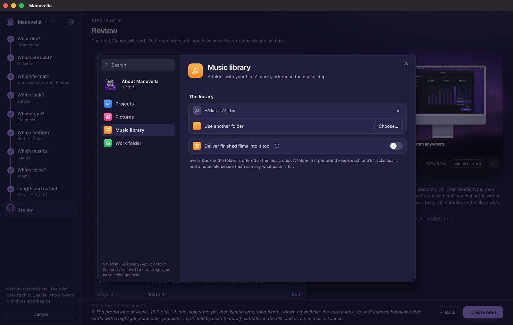

Guide
Settings
Nothing needs configuring. The one optional setting is a music library; this page also lists the environment variables and folders.
The music library
A music library is a folder with the music of your films. The Studio offers every audio file in it (mp3, m4a, aac, wav, aiff, flac, ogg) at its top level and in each folder in it, directly or in that folder’s audio/ folder. A folder per brand is optional and groups its tracks; the folder named after the product is listed first. Dot-folders and the names in musicLibraryIgnore are skipped. An optional notes file beside the tracks (…notes.txt or .md: a paragraph per track, starting with its file name) says what each is for, and the Studio shows it.
<library>/track.mp3 a track at the top
<library>/<Brand>/audio/ a brand's tracks, with <brand>-music-notes.txt beside them
(a paragraph per track, starting with its file name)
<library>/<Brand>/video/<name>/ delivered films, when you ask for thatThe Studio’s Settings is the normal way to set it: see below. By hand, point Manovella at it with the environment variable MANOVELLA_MUSIC (for one run), or in ~/Library/Application Support/manovella/settings.json (~/.config/manovella/settings.json on other systems); a leading ~ is expanded. Nothing is auto-detected.
{
"musicLibrary": "~/Documents/Music",
"musicLibraryIgnore": ["Archive", "Templates"],
"deliverToLibrary": false
}musicLibraryIgnore lists folder names in the library to skip, like dot-folders. deliverToLibrary (default false) delivers finished films into the library too, in <library>/<Brand>/video/<name>/. Otherwise, or without a library, a film goes where the project’s own instructions keep finished media, else <name>/ in the work folder (~/Downloads unless workRoot says otherwise). A new track made with Gemini is saved in the library, in the product’s folder when the library keeps one per brand, with its paragraph in that folder’s notes file; without a library it just goes in the film’s src/audio/. Files a library keeps are copied, never moved out of it.
An older settings.json with brandLibrary and brandLibraryIgnore still works: it is read as musicLibrary and musicLibraryIgnore with deliverToLibrary on, what it did before, and is rewritten with the new keys at the first change you make in the Studio’s Settings.
A library in a file provider (Google Drive, iCloud Drive, Dropbox) may hold its files “dataless” until they are opened: open or copy a file before measuring it.
The Studio’s Settings
The gear beside the logo at the top of the Studio’s sidebar, or Settings… (⌘,) in the app menu of Manovella.app, opens the Settings window, with four panes in its sidebar under About Manovella: Projects, Pictures, Music library and Work folder. A change is saved at once to settings.json, and a folder is chosen with the Mac’s folder picker. A value the command line or the environment gives the run is shown as “this run” and not changed.

Three more keys of the same file, all optional. A folder that is not there counts as unset.
{
"projectFolders": ["~/Documents/Code"],
"pictureFolders": ["~/Pictures", "~/Documents/Backdrops"],
"workRoot": "~/Documents/Films"
}| Key | What it does |
|---|---|
projectFolders | Folders whose git repositories (two levels deep) the Studio offers as products. Unset: the parent of the repository the Studio starts in, its siblings. |
pictureFolders | Folders whose most recent pictures (three levels deep) the Studio offers as backdrops. Unset: ~/Pictures. Add ~/Desktop or ~/Downloads yourself if you keep backdrops there. |
workRoot | Where a film’s <name>-work folder goes and, unless it is delivered into the library or the project has an instruction, its <name>/ delivery. Unset: ~/Downloads. |
Environment variables
| Variable | What it does |
|---|---|
MANOVELLA_MUSIC | The music library folder, for one run; wins over musicLibrary in settings.json. |
MANOVELLA_ROOTS | Comma-separated folders whose git repositories the Studio offers as products (two levels deep). Without it, projectFolders in settings.json, else the parent of the repository the command runs in. |
FILM_DOWNLOADS | The work folder for one run of deliver.mjs (its tests use it); wins over workRoot. |
MANOVELLA_WINDOW=chrome | Open the Studio in a Chrome app window even when Manovella.app is built. |
VOICE_PYTHON | The Python that runs the voice models, instead of the one voice.mjs --setup makes. |
VOICE_SETUP_PYTHON | The Python 3.13 --setup builds the environment from, when it is not the usual python3.13. |
HF_HOME, HF_HUB_CACHE | Where the Studio looks for downloaded voice models (default ~/.cache/huggingface). |
OPTIM=0 | Skip ImageOptim on delivered covers, for an image whose pixels must not change. |
WORKERS, QOS, TEMP_MAX | The render’s heat defaults: see Rendering. |
Where Manovella keeps things
| Path | What |
|---|---|
~/Library/Application Support/manovella/ | The Studio’s remembered briefs (one per product) and settings.json, which its Settings write. |
~/Library/Caches/manovella/ | Pictures converted for the Studio, and the Chrome app window’s own profile. |
~/Applications/Manovella.app | The Studio’s window app, once built. |
~/.local/share/film-voice | The voice models’ Python environment, made by voice.mjs --setup. |
~/Downloads/<name>-work/ | A film’s work folder, until it is delivered. ~/Downloads is the default work root: workRoot moves it. |